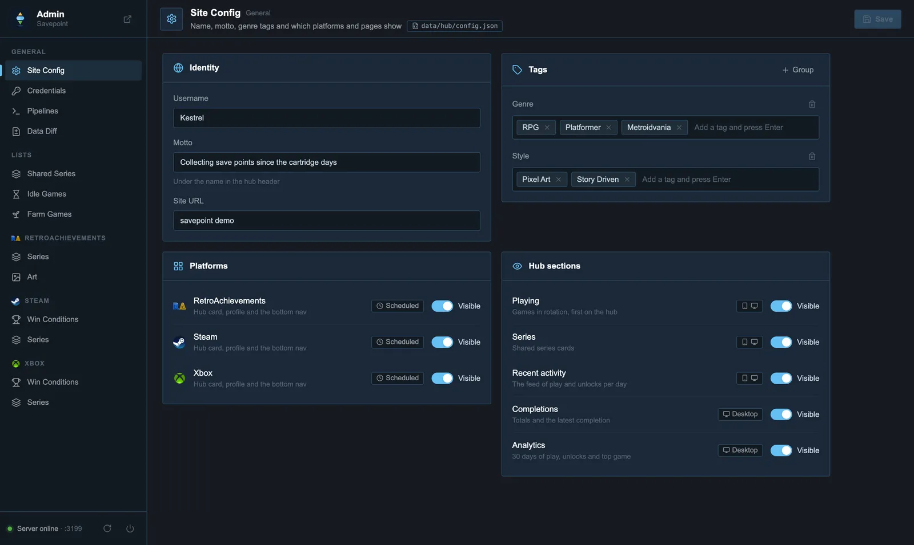
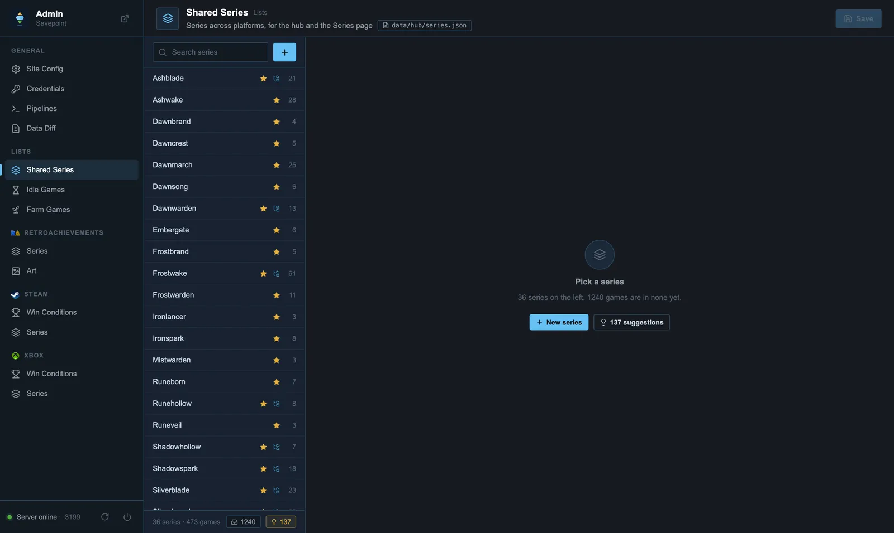

Set up your Savepoint
About fifteen minutes, all in the browser. Fill in your GitHub name below and every link and command on this page becomes yours.
01Create your repository
- Open the template and click Use this template → Create a new repository.
- Name it
savepoint. The name becomes your address. - Keep it Public: GitHub Pages is free for public repositories, and so are Actions minutes.
Use the template button, not Fork. GitHub turns off scheduled workflows in forks, so your data would never update on its own.
02Turn on GitHub Pages
In your repository, open Settings → Pages and set Build and deployment → Source to GitHub Actions.
That's the only setting. Don't choose a branch: the site is deployed by a workflow that adds your data to it.
03Get your API keys
Only for the platforms you picked above. Each takes a minute or two.
- Sign in at retroachievements.org.
- Open Settings, find Keys, and copy your Web API Key.
- You'll need that key and your username.
- Get a key at steamcommunity.com/dev/apikey. Any domain name works, for example
localhost. - Find your SteamID64, the 17-digit number starting with
7656119. Paste your profile URL into steamid.io if you don't know it. - In Steam, Edit Profile → Privacy Settings: set My profile and Game details to Public. With private game details Steam returns nothing.
- Xbox has no public API for this, so Savepoint uses OpenXBL, a free service. Sign in there with the Microsoft account you play on.
- Open your profile and create an API key.
- The free plan allows 150 requests an hour; a normal run uses two or three.
04Add the keys as secrets
Open Settings → Secrets and variables → Actions → New repository secret and add one secret per row. Names are case-sensitive.
| Secret | Value |
|---|---|
RA_USERNAME | Your RetroAchievements username |
RA_API_KEY | Your Web API Key |
STEAM_API_KEY | Your Steam Web API key |
STEAM_USER_ID | Your 17-digit SteamID64 |
XBOX_API_KEY | Your OpenXBL API key |
Secrets are encrypted and only the workflows can read them. They never reach the site or the data.
05Make it yours
Fill this in and copy the result into data/hub/config.json (the pencil icon edits it on GitHub). The card shows roughly how your hub header will look.
The platforms come from your picks at the top of the page. Commit the file: that push deploys your site for the first time, still without data.
06Run the first data fetch
- Open Actions → Fetch Data. If GitHub asks, enable workflows first.
- Click Run workflow, set mode to
full-refresh, and start it. - Give it a few minutes; a big Steam library can take half an hour. A deploy job follows when data changed.
Then open your site. From now on it updates every hour by itself.
07Put it on your phone
Open your site on your phone, then Share → Add to Home Screen in Safari, or ⋮ → Install app in Chrome. It opens full screen, and the circular arrow in the hub header loads a new version right away.
Turning platforms on and off
Two separate switches: whether a platform syncs, and whether it shows.
| You want to… | Do this |
|---|---|
| Not use a platform at all | Skip its secrets, and set it to "visible": false in config.json |
| Hide a platform on the site | "visible": false in config.json, or Admin → Site Config |
| Stop syncing but keep showing it | In .github/workflows/fetch-data.yml set RA_ENABLED, STEAM_ENABLED or XBOX_ENABLED to 'false' |
| Sync a paused platform once | Run workflow with platforms set to that platform |
| Hide a hub section | "visible": false under playing, series, activity, completions or analytics |
Scheduling
| When | Mode | What it does |
|---|---|---|
| Every hour | incremental | Recent activity; writes only when you played or unlocked something |
| Daily, 00:05 UTC | midnight | Rarity, ranks and other slow-changing data |
| By hand | full-refresh | Every game on every platform: the first run, or a repair |
| By hand | watchlist-only | Only the RetroAchievements want-to-play list |
GitHub starts scheduled runs when it has room, often 10 to 60 minutes late. For runs on time, add an external cron.
On-time runs with cron-job.org
cron-job.org is free and can start the workflow through GitHub's API.
1. Create a GitHub token
Make a fine-grained token with Only select repositories → savepoint, and Permissions → Actions: Read and write.
2. Create the job
| URL | |
| Schedule | |
| Method | POST (under Advanced) |
| Headers | Authorization: Bearer <your token>
Accept: application/vnd.github+json
X-GitHub-Api-Version: 2022-11-28 |
| Body |
Make one job of each kind. A working call answers 204 No Content. You can keep the built-in schedule as a fallback or remove its cron: lines from fetch-data.yml.
The admin panel
Runs on your computer, never on the site. It edits files in your repository, so you work in a local copy. You need Node.js 20 or newer.
git clone https://github.com/your-name/savepoint.git cd savepoint npm install cp .env.example .env # then fill in your keys npm run data:pull # your data branch into data/ npm run admin # http://localhost:3131

| Page | For |
|---|---|
| Site Config | Name, motto, tags, visible platforms and hub sections |
| Credentials | Your .env keys |
| Pipelines | Start real data runs (GH_DISPATCH_TOKEN), test runs on your computer, your cron-job.org jobs (CRON_JOB_API_KEY) |
| Data Diff | What you changed, then Commit, Push or Publish |
| Shared Series | Series that mix platforms, for the Series page |
| Idle / Farm Games | Leave idlers and achievement farms out of Playing and Analytics |
| RetroAchievements Art | Wide art and stand-in icons from SteamGridDB (SGDB_API_KEY) |
| Win Conditions | The achievement that means "beaten" for a Steam or Xbox game |

Saving writes files in data/; they reach your site when you commit and push them (Data Diff → Publish).
Customising
- Fallback art: after your first run,
npm run build:fallback-artbuilds the mosaic shown behind games without art from your own library. - Custom domain: Settings → Pages → Custom domain. Every page works at any address.
- Looks: plain files, no build step. Shared styles are in
assets/ui.css; edit, push, done.
Getting updates
To pull improvements from the template into your copy:
git remote add template https://github.com/yozuryu/savepoint.git git fetch template git merge template/main --allow-unrelated-histories # first time; later just git merge template/main
When Git reports conflicts in your config or series files, keep your own version.
Troubleshooting
The site shows GitHub's 404 page
Set Settings → Pages → Source to GitHub Actions, then run Deploy site from the Actions tab.
A profile says "No data yet"
Run Fetch Data with full-refresh, and check that platform's secrets.
The run says a platform was skipped
Its secrets are missing or misspelled. Names are case-sensitive.
Steam shows no games
Your Steam Game details privacy setting must be Public.
Xbox fails with 429
OpenXBL's rate limit. A later run succeeds.
The site stopped updating
GitHub turns off scheduled workflows after 60 days without activity in the repository. Enable Fetch Data again in the Actions tab, or use cron-job.org, which keeps it running.
My phone shows an old version
Tap the circular arrow in the hub header (Refresh app).
Privacy and license
Your repository and site are public, so your stats are too, like your profiles on the platforms themselves. Your keys aren't: they stay in GitHub's encrypted secrets and your local .env.
Savepoint is MIT licensed: free to use, change and share.